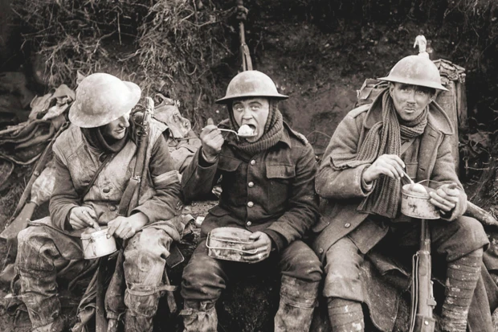
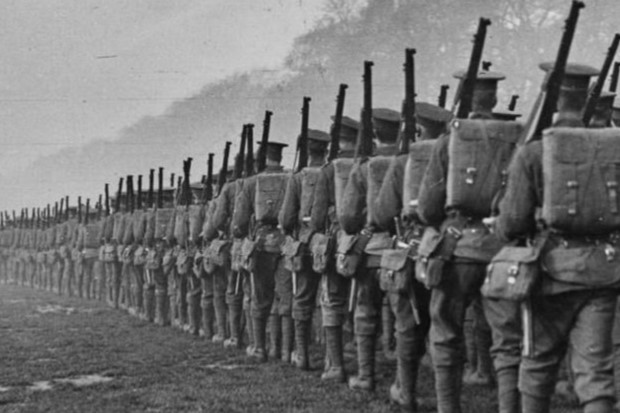

ABOUT US
"They shall grow not old, as we that are left grow old: Age shall not weary them, nor the years condemn. We will remember them."
Aggressive militarism throughout Europe. A tangled web of alliances between nations. Proud leaders fighting to be at the top of the world stage. Heated tensions in the Balkans. And a dead Archduke.
Suddenly, all the lamps went out and the world was at war. But it would be unlike anything anyone had ever seen. It reshaped, devastated, and completely changed the fabric of not only warfare; but the whole world. Technology, culture, fashion, music, education, politics, the economy, etc.
And more than that, it affected the individual. The soldier and the civilian alike. The war killed millions of men, women, and children. Not only causing irreparable damage to physical bodies, but also destroying the psyche of many more souls.
Those who lived through this conflict have since passed away, and there are no known living veterans to pass on their memories to us today. It has, after all, been over a century since the war left a striking indent on the planet. But the younger generations still remain. We are still here to remember them. To immortalize them. To promote their legacy and impact to our generation and the generations to come.
OUR MISSION
FOURTEEN-NINETEEN’S mission is to keep the legacy of the First World War alive. We do this in three ways: Restoration, Preservation, And Education.
RESTORATION
We work tirelessly to restore the old artifacts of the time period. Ranging from tanks, uniforms, weapons, footage, gadgets, vehicles, photographs, art, utensils, etc. No job is too big, or too small for our devoted team.
PRESERVATION
Our teams visit WWI battle sites and historical locations and work to preserve them, just as they would have been over a hundred years ago. Several trenches and locations have been preserved for public viewing and guided tours. We also help with the upkeep of smaller memorials and gravesites of those who had lost their lives in the conflict.
EDUCATION
We create and provide learning resources for schools and history students of all ages. Organize events relating to the First World War, and even team up with museums and living history groups throughout the world. We also host tours and exhibits to showcase our preserved locations and artifacts.